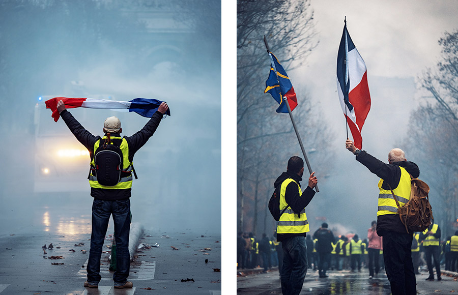
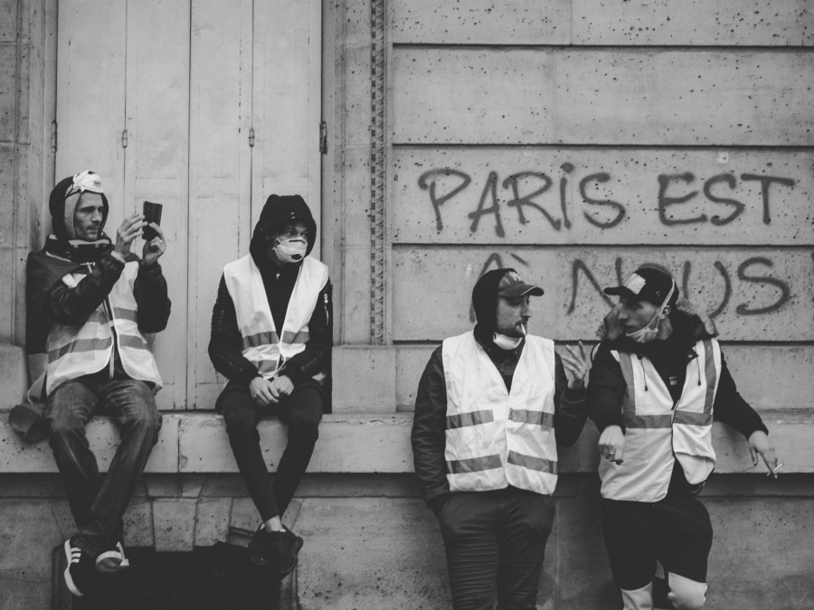
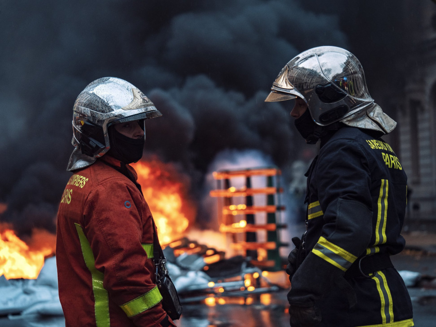
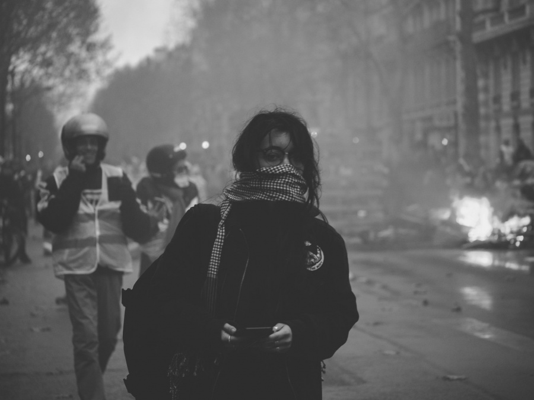
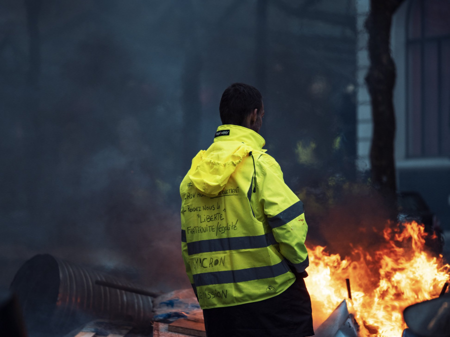
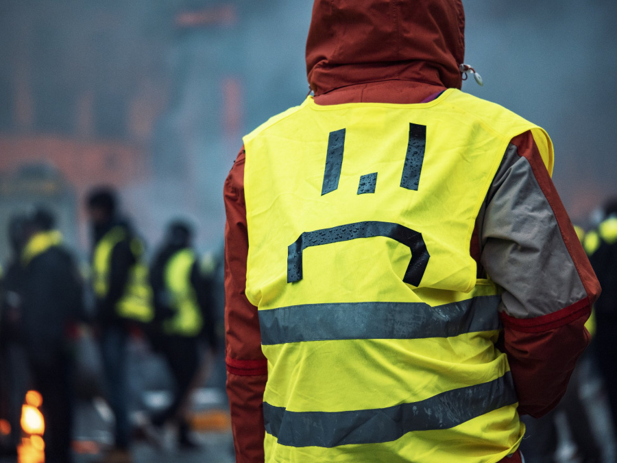
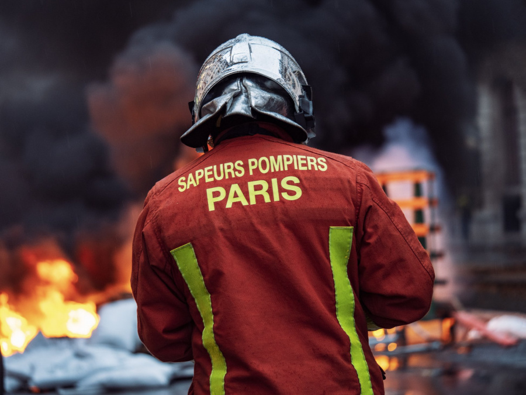
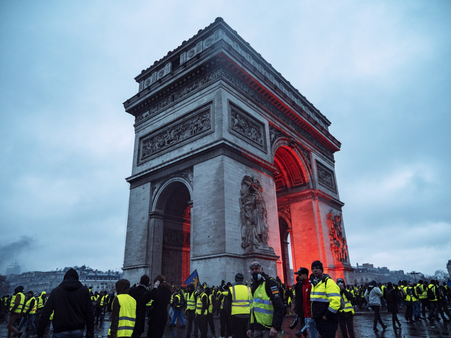
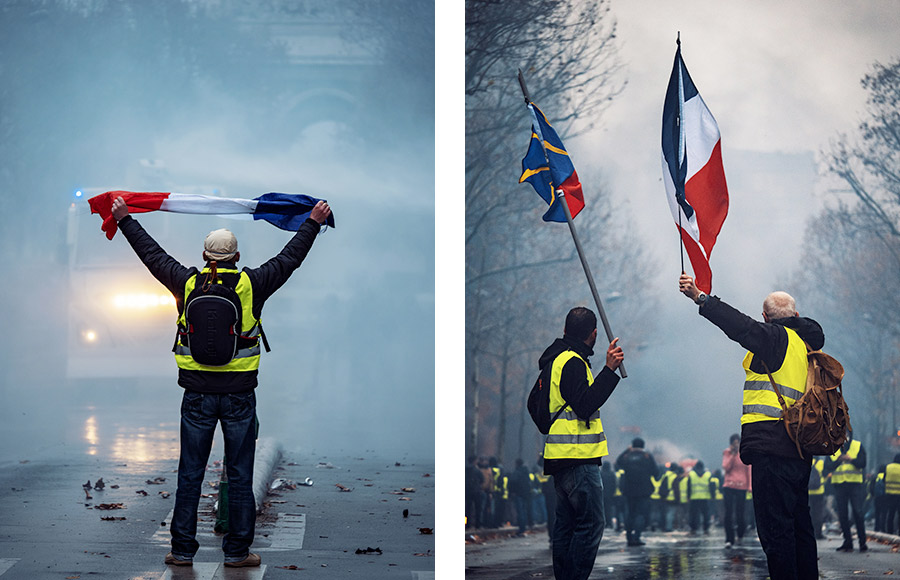
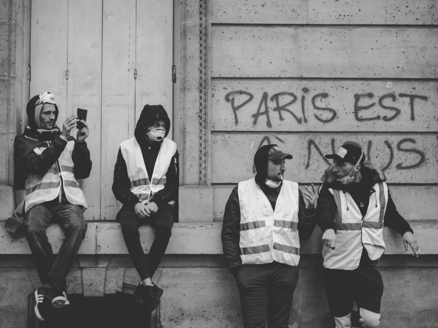
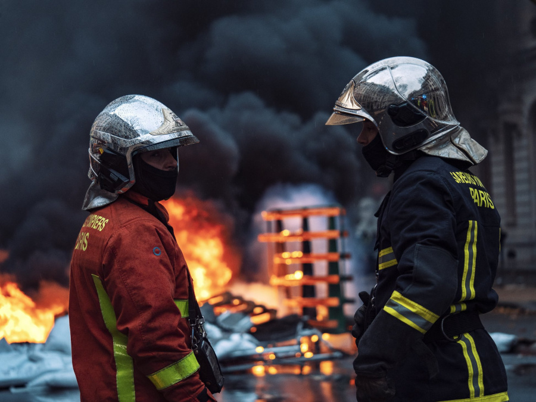
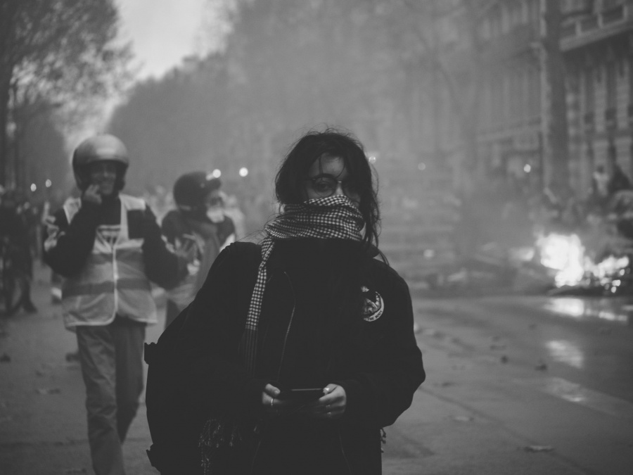
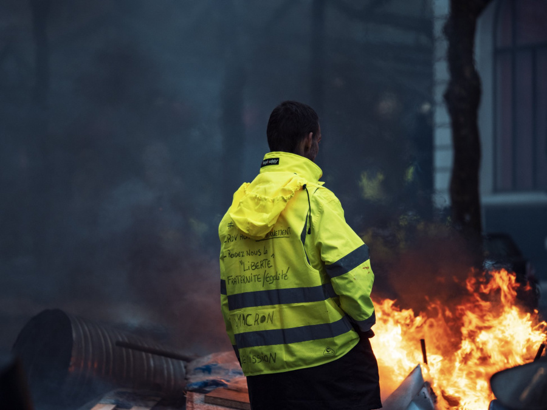
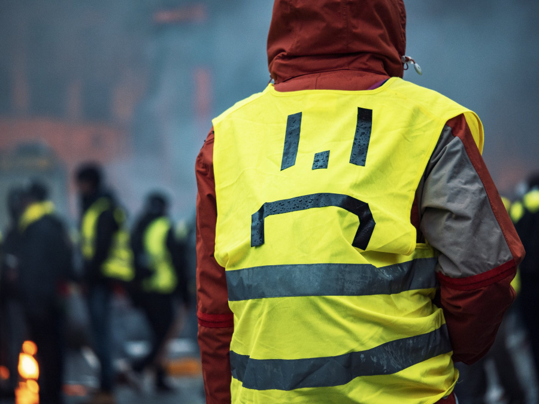
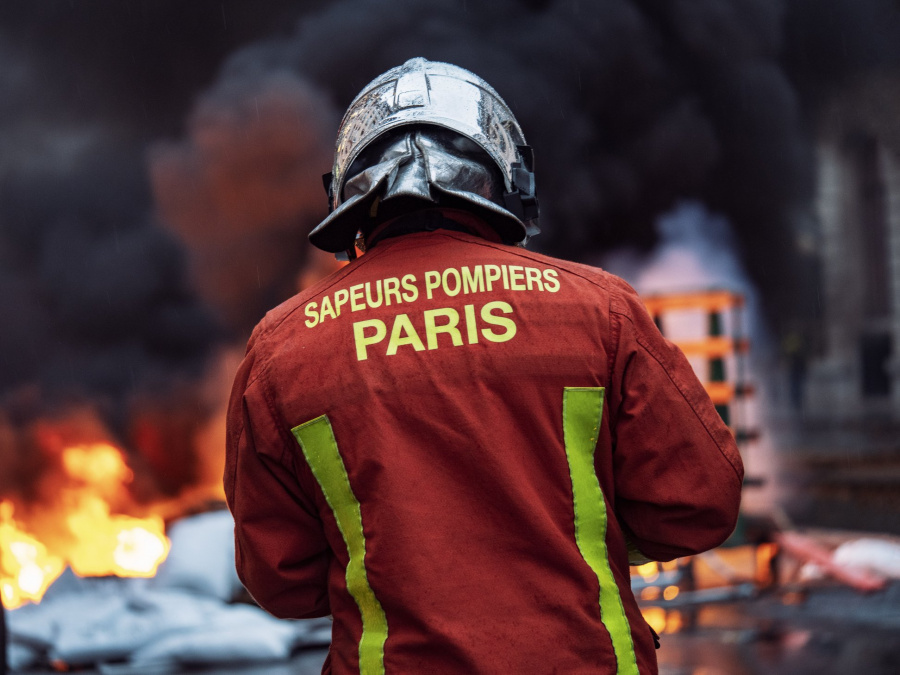
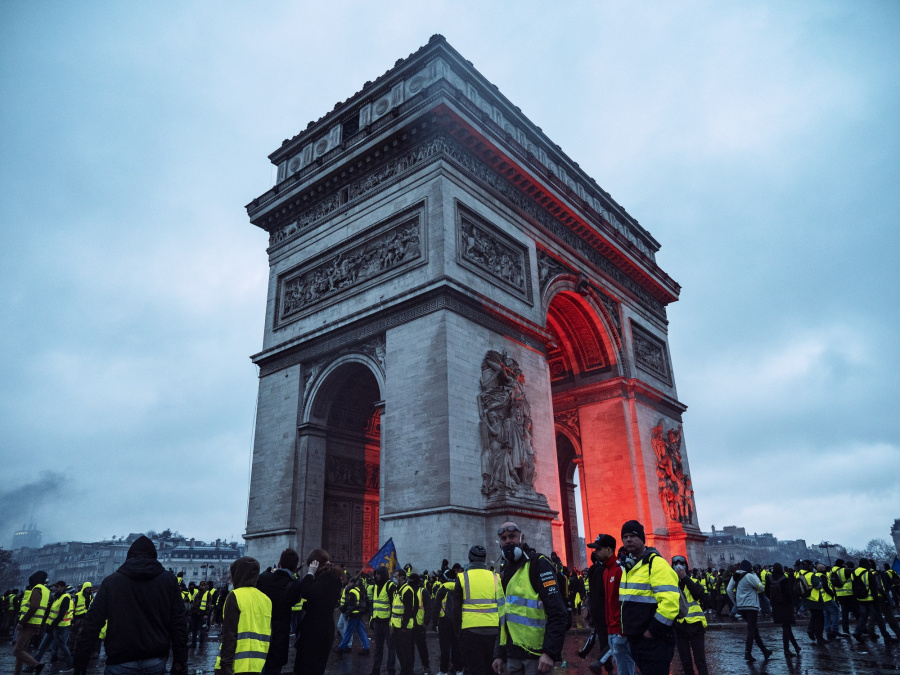
« Au royaume des aveugles, les borgnes sont rois. »
À plus de trois cents milles du Chimborazo, à une centaine de milles des neiges du Cotopaxi, dans la région la plus déserte des Andes équatoriales, s’étend la mystérieuse vallée : le Pays des Aveugles. Il y a fort longtemps, cette vallée était suffisamment accessible pour que des gens, en franchissant d’effroyables gorges et un glacier périlleux, parvinssent jusqu’à ses pâturages ; et, en effet, quelques familles de métis péruviens s’y réfugièrent, fuyant la cruauté et la tyrannie de leurs maîtres espagnols. Puis vint la stupéfiante éruption du Mindobamba, qui, pendant dix-sept jours, plongea Quito dans les ténèbres ; les eaux bouillaient à Yaguachi, et sur les rivières, jusqu’à Guyaquil, les poissons morts flottaient. Partout, sur le versant du Pacifique, il y eut des avalanches, des éboulements énormes, des dégels subits et des inondations ; l’antique crête montagneuse de l’Arauca glissa et s’écroula avec un bruit de tonnerre, élevant à jamais une infranchissable barrière entre le Pays des Aveugles et le reste des hommes. Au moment où se produisit ce bouleversement, un des premiers colons de la vallée était parti pour une importante mission ; n’ayant pu retrouver sa route, il lui fallut, par force, oublier sa femme, son fils, ses amis et tous les biens qu’il avait laissés dans la montagne. Il recommença une existence nouvelle dans le monde de la plaine ; mais la maladie et la cécité l’accablèrent, et, pour s’en débarrasser, on l’envoya mourir dans les mines. Pourquoi avait-il quitté cette retraite dans laquelle il avait été transporté tout enfant, lié avec un ballot d’affaires sur le dos d’un lama ? L’histoire qu’il raconta pour expliquer son voyage fut l’origine d’une légende qui s’est perpétuée jusqu’à nos jours au long de la cordillère des Andes. La vallée, prétendait-il, jouissait d’un climat égal, et contenait tout ce que pouvait désirer le cœur de l’homme : de l’eau douce, des, pâturages, des pentes de riche terre brune garnies d’arbrisseaux à fruits excellents ; d’un côté, grimpaient de vastes forêts de pins qui retenaient les avalanches, et partout ailleurs la vallée était bornée par de hautes murailles de roches gris vert surmontées d’un faîtage de glaces. Les eaux de la fonte des neiges ne venaient pas jusque-là mais se déversaient ailleurs par de lointaines déclivités ; parfois, cependant, à de très longs intervalles, d’énormes masses se détachaient du glacier et dégringolaient vers la vallée, sans y atteindre. Jamais il n’y pleuvait et n’y neigeait ; seules d’abondantes sources, dont les canaux d’irrigation conduisaient les eaux en tous sens, arrosaient les gras pâturages. Le bétail se multipliait, les colons prospéraient vraiment, mais un souci inquiétait leur bonheur : une étrange calamité s’était abattue sur eux, qui rendait aveugles tous les enfants qui leur naissaient et même plusieurs de ceux qu’ils avaient amenés avec eux… C’était pour chercher un charme, un antidote contre ce fléau, qu’il avait affronté les fatigues, les difficultés et les dangers de la descente des gorges. En ce temps-là, les hommes ne savaient pas qu’il existe des germes morbides et des infections contagieuses ; ils croyaient que leur mal était le châtiment de leurs péchés. Selon le naïf envoyé, la cécité les affligeait parce que les premiers immigrants, arrivés sans prêtre, avaient négligé d’élever un autel à la divinité en prenant possession de la vallée. Aussi en voulait-il un superbe, efficace et ne coûtant pas trop cher, pour l’ériger dans leurs prairies ; il lui fallait aussi des reliques et tels autres puissants symboles de foi, des médailles mystérieuses et des prières. Dans son bissac, il avait, pour acheter le saint remède contre le mal, une barre d’argent vierge dont il refusa d’abord d’expliquer la provenance ; avec l’obstination d’un menteur inexpérimenté, il affirmait que ce métal n’existait pas dans leur vallée ; poussé à bout, il déclara, contre l’évidence, que les habitants avaient fait fondre toutes les monnaies et tous les objets en argent qu’ils possédaient : « Car, disait-il, nous n’avons aucun besoin, là-haut, de métaux précieux… » On se représente le montagnard aux regards déjà obscurcis, brûlé de soleil, inquiet et dégingandé, tournant fiévreusement sa coiffure entre ses doigts, étranger aux us et coutumes d’en bas, et narrant son histoire, avant le cataclysme, à quelque prêtre attentif et curieux. On se le figure cherchant bientôt à regagner son pays, muni de pieuses et infaillibles panacées, et contemplant avec une détresse infinie le chaos de rochers amoncelés à l’endroit où débouchaient auparavant les gorges. On ne sait rien de plus de ses infortunes, sinon sa mort ignominieuse, au bout de quelques années, épave infortunée d’un éden inaccessible. Le torrent qui jadis coulait à ciel ouvert s’échappait dorénavant par l’ouverture d’une caverne rocheuse, et les dires maladroits du pauvre égaré donnèrent lieu à cette légende d’une race d’aveugles existant quelque part, là-haut, légende qui, récemment, s’est vérifiée d’une façon presque miraculeuse. Parmi la population de cette vallée close et oubliée, la maladie, paraît-il, suivit son cours implacable. La vue des vieux s’affaiblit à tel point qu’ils allèrent à tâtons, celle des jeunes fut confuse et basse et les enfants qui leur naquirent ne virent pas du tout. Mais la vie était facile dans ce solitaire bassin bordé de neiges, sans épines ni bruyères, sans insectes venimeux ni bêtes mauvaises, avec les lamas doux et paisibles que les premiers habitants avaient accompagnés, poussés et traînés par les lits des torrents et le fond des gorges jusqu’à l’inabordable refuge. C’est par degrés imperceptibles que ceux qui voyaient devinrent aveugles, de sorte qu’ils se rendirent à peine compte de leur infortune. Ils guidaient les enfants sans regards, qui connurent merveilleusement la vallée entière, et, lorsqu’à la fin toute vue eut disparu d’entre eux, la race n’en dura pas moins. Ils eurent le temps de s’adapter à l’usage du feu, qu’ils entretenaient soigneusement dans des poêles de pierre. Au début, les habitants de la vallée avaient été des gens simples, illettrés, à peine influencés par la civilisation espagnole, mais conservant quelque chose des traditions d’art de l’antique Pérou et de sa philosophie immémoriale. Les générations succédèrent aux générations. Ils oublièrent maintes habitudes et en inventèrent de nouvelles. La notion du monde plus grand dont ils étaient issus ne fut plus qu’un mythe incertain. En toutes choses, hors la vue, ils étaient forts et capables. Bientôt se révéla parmi eux un homme à l’esprit original, possédant le don de l’éloquence et de la persuasion ; puis il y en eut un second, qui trépassa comme le premier ; mais, après eux, ils laissaient une influence durable. La petite communauté s’accrut en nombre et en intelligence, débattant et résolvant ses problèmes économiques et sociaux, et un temps vint où commença la quinzième génération à compter de l’ancêtre qui partit vers les pays d’en bas avec une barre d’argent pour chercher le secours de Dieu et ne revint jamais. C’est à la même époque qu’un mortel, provenant du monde extérieur, tomba inopinément dans la contrée close, et nous allons rapporter ici ses aventures. C’était un montagnard des environs de Quito ; il avait vu du pays, étant descendu parfois jusqu’à la mer ; il lisait des livres dont il tirait profit et passait pour un homme perspicace et entreprenant. Des Anglais, venus faire l’ascension de certains pics des Andes, l’engagèrent pour remplacer un de leurs trois guides suisses tombé malade. Après avoir réussi diverses ascensions assez périlleuses, ils se décidèrent à tenter enfin celle du Parascotopetl, dans laquelle le guide indigène disparut. On a relaté cet accident une douzaine de fois par écrit et le meilleur récit est celui qu’en a fait Pointer. Il raconte comment les alpinistes, après une montée périlleuse et presque verticale, parvinrent au bord même du dernier et du plus profond précipice, comment ils édifièrent pour la nuit un abri dans la neige, sur un épaulement de rocher, et, avec une réelle puissance dramatique, comment ils s’aperçurent soudain que Nuñez n’était plus là, comment ils appelèrent sans obtenir de réponse et s’époumonnèrent à crier et à siffler sans plus fermer l’œil le reste de la nuit. À l’aube, ils découvrirent les traces de sa chute et comprirent pourquoi il n’avait pu répondre à leurs appels. Il avait glissé du côté est, sur le versant inconnu de la montagne, dévalant une pente rapide couverte de neige dans laquelle son corps avait creusé un large sillon et déterminé une avalanche. Sa trace allait se perdre ainsi au bord d’un effroyable précipice par delà lequel on ne distinguait plus rien. Au-dessous d’eux, tout à fait en bas, ils entrevirent, confus dans le lointain brumeux, des arbres dont les sommets émergeaient d’une vallée étroite et encaissée : le Pays des Aveugles. Mais ils ne savaient pas que c’était là cette contrée légendaire qu’aucun trait particulier ne signalait d’ailleurs à l’attention. Découragés par ce malheur, ils abandonnèrent dans l’après-midi leur ascension, et Pointer dut rejoindre son poste avant d’avoir pu renouveler sa tentative. Aujourd’hui encore, le Parascotopetl dresse vers le ciel sa tête inconquise, et l’abri édifié par Pointer et ses compagnons tombe en ruine parmi les neiges sans donner asile à d’autres visiteurs. Le montagnard survécut. Après avoir trébuché sur le rebord, il avait fait une chute de mille pieds, et, au milieu d’un nuage de neige, il avait glissé au long d’une pente abrupte, tourbillonnant, étourdi et insensible, mais sans un os rompu ; de chute en chute, il parvint à des déclivités plus douces où il s’arrêta enfin, enfoui dans l’amas de neige qui l’avait accompagné et sauvé. Quand il reprit ses sens, il s’imagina vaguement qu’il était couché dans son lit et malade ; puis, avec son expérience de la montagne, il se rendit compte de sa situation. Avec des pauses pour reprendre haleine, il se dégagea de sa tutélaire prison et bientôt il aperçut les étoiles. Il demeura quelque temps à plat ventre, se demandant en quel coin de la terre il se trouvait et par quelle suite de circonstances il y était transporté. Poursuivant ses recherches, il se palpa les membres, constata que plusieurs de ses boutons étaient arrachés et que sa veste était rabattue sur son cou et sa tète. La poche dans laquelle il mettait son couteau était vide, et son chapeau avait disparu, bien qu’il eût eu la précaution de se l’attacher sous le menton. Il se rappela qu’en dernier lieu il cherchait des pierres pour surélever, dans leur abri, la partie du mur qui le protégeait. Il avait perdu son pic aussi… Il en conclut qu’il avait dû tomber, et, levant la tête, il considéra, dans la blême lumière de la lune naissante qui l’exagérait, la distance qu’il avait parcourue. Les yeux agrandis, il contemplait l’immense et pâle falaise qui, d’instant en instant projetait davantage hors des ténèbres sa masse surplombante, dont la beauté fantastique et mystérieuse lui serra le cœur : il fut secoué d’un accès de sanglots et de rire… Un long espace de temps s’écoula ainsi. Puis, il remarqua qu’il était arrêté à la limite des neiges. Au-dessous de lui, à l’extrémité d’une pente praticable et baignée par la clarté de la lune, il discerna des intervalles sombres qui devaient être des surfaces gazonnées. Malgré ses membres endoloris et ses jointures ankylosées, il réussit à se mettre sur pieds, se laissa péniblement glisser au bas du tas de neige où il était juché, et se mit à dévaler jusqu’à ce qu’il fût sur le gazon. Arrivé là, il s’effondra auprès d’une roche, vida à longs traits le flacon qu’il tira de la poche intérieure de son gilet, et s’endormit presque aussitôt. Le chant des oiseaux dans les arbres l’éveilla. Il s’installa sur son séant et chercha à se reconnaître : il se trouvait sur une petite plate-forme triangulaire, au pied d’un vaste précipice qui coupait obliquement le ravin par lequel sa boule de neige l’avait amené. Devant lui, un autre mur de roc se dressait contre le ciel. La gorge, entre ces deux murailles courait de l’est à l’ouest ; les rayons du soleil levant la parcouraient toute et s’en allaient illuminer l’amoncellement de roches qui fermait le défilé. Du côté libre, s’ouvrait un précipice également abrupt ; mais, dans une crevasse, il découvrit une sorte de cheminée aux parois ruisselantes de neige fondante et par laquelle, en bravant tous les risques, on pouvait se hasarder. La descente fut plus aisée qu’il ne s’y attendait, et il parvint ainsi sur une seconde plate-forme désolée ; puis, après une escalade qui n’offrait rien de périlleux, il atteignit une pente rapide garnie d’arbres. Après s’être orienté, il se tourna vers l’extrémité la plus élevée de la gorge, car il observa qu’elle débouchait sur de vertes prairies, parmi lesquelles il apercevait très distinctement un groupe de huttes de forme inaccoutumée. Par instants, il n’avançait pas plus que s’il eût essayé de gravir un mur à pic, et, au bout de peu de temps, le soleil cessa d’éclairer la gorge, les oiseaux se turent, l’air devint glacial et obscur autour du montagnard. Mais la vallée lointaine avec ses maisons n’en paraissait que plus attrayante. Bientôt il arriva sur une série de talus et parmi les rochers il avisa, car il était observateur, une fougère inconnue qui semblait tendre hors des crevasses d’avides mains vertes. Il en arracha une ou deux feuilles qu’il mâcha et se sentit quelque peu réconforté. Vers midi, il avait enfin gagné le rebord supérieur de la gorge et sous ses yeux s’étendait la plaine ensoleillée. Épuisé de fatigue et les membres roidis, il s’assit à l’ombre, tout près d’une source, emplit sa gourde d’eau limpide et fraîche et en but d’un trait le contenu. Il prolongea sa halte, éprouvant un grand besoin de repos avant de se mettre en route vers les maisons. Ces maisons avaient une apparence fort étrange et, à vrai dire, l’aspect de la vallée tout entière devenait, à mesure que ses regards la parcouraient, de plus en plus insolite. Sa surface était occupée par des prairies, grasses, luxuriantes, émaillées de fleurs et irriguées avec un soin extraordinaire qui témoignait d’un entretien systématique. À mi-côte, entourant la vallée, se dressait un mur au pied duquel était creusé un canal d’où s’échappaient les ruisselets qui alimentaient les conduites des prairies. Sur les pentes extérieures, des troupeaux de lamas broutaient l’herbe rare. De place en place, contre la muraille, des appentis s’appuyaient, apparemment des abris pour les animaux. Les rigoles aboutissaient, au centre de la vallée, dans un large chenal qui était clos sur chaque rive par un parapet à hauteur de poitrine. Ces canalisations et de nombreux sentiers, pavés de pierres blanches et noires et bordés par un curieux petit trottoir s’entrecroisaient d’une façon très régulière et donnaient à ce vallon un caractère singulièrement urbain. Les maisons ne rappelaient en rien l’agglomération désordonnée des villages qu’il connaissait dans les Andes. Elles étaient bâties, en rang continu, de chaque côté d’une rue centrale, dont la propreté était surprenante ; ici et là, elles étaient percées d’une porte, mais aucune fenêtre, aucune baie ne rompait la monotonie de leurs façades aux couleurs disparates. Des teintes bizarres les ornaient en un pêle-mêle étonnant : elles étaient enduites d’une sorte de plâtre, parfois gris, parfois brun et même ardoise ou noirâtre. C’est la vue de ce revêtement fantasque qui amena tout d’abord le mot « aveugle » dans les pensées du guide.Il descendit une pente abrupte et s’arrêta, à une certaine distance du mur d’enceinte, près de l’endroit où le canal rejetait le surplus de ses eaux en une frêle et tremblante cascade qui allait se perdre dans les profondeurs de la gorge. Il apercevait maintenant, dans un coin éloigné de la vallée, des hommes et des femmes qui semblaient faire la sieste sur des tas de foin ; à l’entrée du village, des enfants étaient couchés sur le gazon, et, non loin de l’endroit d’où Nuñez les observait, trois hommes, chargés de seaux suspendus à une sorte de joug qui leur emboitait les épaules, suivaient un sentier partant de la muraille de clôture et se dirigeaient vers le groupe d’habitations. Ces hommes étaient accoutrés de vêtements en poil de lama, de bottes et de ceintures de cuir, et coiffés de casquettes de drap avec un rabat pour la nuque et les oreilles. Ils se suivaient à la file, avançant lentement et bâillant comme des gens qui viennent de passer la nuit. Il y avait dans leur aspect quelque chose de si rassurant, de si prospère et de si respectable, qu’après un moment d’hésitation Nuñez se mit aussi en évidence que possible sur son rocher et lança de toutes ses forces un appel qui retentit jusqu’au bout de la vallée. Les trois hommes s’arrêtèrent, remuant la tête comme s’ils regardaient autour d’eux. Ils tournaient leurs visages en tous sens et Nuñez gesticulait tant qu’il pouvait. Mais, malgré cette folle mimique, ils ne paraissaient pas le voir, et, au bout d’un instant, se plaçant dans la direction des montagnes de l’ouest, ils répondirent par des cris. Nuñez s’égosilla de nouveau et, pour la seconde fois, comme il s’était repris à gesticuler sans effet, le mot « aveugle » lui trotta de nouveau par l’esprit. « Ces idiots doivent être aveugles ! », se dit-il. Enfin, quand, après bien des cris et des accès d’irritation, Nuñez eut franchi le canal sur un petit pont donnant accès à une porte percée dans la muraille et qu’il eut rejoint les trois hommes, il constata qu’ils étaient aveugles en effet : il eut la certitude alors que c’était là le Pays des Aveugles dont parlait la légende. Cette conviction s’était aussitôt emparée de lui, en même temps qu’il éprouvait une joie irréfléchie à la perspective d’une aventure peu commune et assez enviable. Les trois hommes, debout côte à côte, ne le regardaient pas venir ; mais ils tendaient l’oreille dans sa direction, et semblaient fort attentifs au bruit inaccoutumé de ses pas. Ils se pressaient l’un contre l’autre comme des gens qui ont peur, et Nuñez observait leurs paupières closes et renfoncées sous lesquelles il ne devait plus y avoir de globe oculaire. Leurs visages exprimaient l’inquiétude.« Le brave homme qui a fait cet ouvrage, se dit-il, devait être aveugle comme une taupe ! »
Nuñez avançait, du pas confiant de l’adolescent qui entre dans la vie. Toutes les vieilles histoires de la vallée ensevelie et du Pays des Aveugles lui étaient revenues en mémoire et comme un refrain dans ses pensées, il se répétait le proverbe : Au royaume des aveugles, les borgnes sont rois. Fort civilement, il les salua, en les dévisageant avec curiosité.Un homme… C’est un homme… Un homme ou un esprit qui descend par les rochers, proféra l’un des aveugles dans un espagnol à peine reconnaissable.
L’étoffe de leur vêtement était curieusement façonnée avec des coutures de modèles divers. Les mains tendues, ils firent vers lui des gestes simultanés qui l’effrayèrent. Il recula devant ces doigts avides.D’où vient-il, frère Pedro ? demanda l’un des hommes. Il descend par les rochers. Je viens de par delà les montagnes, répondit Nuñez. Je viens de la contrée, tout là-bas, où les hommes voient ; j’arrive de Bogota, où il y a des centaines de mille habitants… Et j’ai franchi la montagne qui cache à la vue le pays et la ville. La vue ? murmura Pedro. La vue ? Il vient des rochers, dit le second aveugle.
Ils empoignèrent l’étranger et le tâtèrent des pieds à la tète, sans desserrer les dents avant que leur examen fût terminé.Avancez ici ! ordonna le troisième aveugle, en suivant ce mouvement de recul.
Sans doute, cet organe, avec ses paupières mobiles, devait leur paraître en lui une chose anormale. Ils le palpèrent de nouveau.Attention ! avertit Nuñez, au moment où un doigt appuyait fortement sur son œil.
C’est à peine s’ils l’écoutaient.Singulière créature, Correa ! conclut celui qui s’appelait Pedro. Comme ses cheveux sont rudes ! On dirait du poil de lama. Il est aussi rugueux que les rochers qui l’ont enfanté ; peut-être qu’il s’affinera, répondit Correa, explorant d’une main douce et un peu moite le menton non rasé de Nuñez, qui se débattait entre leurs poignes tenaces. Attention ! fit-il encore. Il parle, dit le troisième aveugle. Certainement, c’est un homme. Heu ! grommela Pedro, palpant l’étoffe de la veste de Nuñez. Alors, vous voilà venu au monde… Hors du monde, rectifia le guide. Par-dessus les montagnes et les glaciers, en escaladant les sommets, là-haut, à mi-chemin du soleil… Hors du grand, du vaste monde qui descend jusqu’à la mer après douze jours de marche.
Ils poussèrent, en effet, quelques cris. Puis, Pedro se mit en marche en prenant Nuñez par la main pour le mener vers les maisons. Mais Nuñez retira sa main.Nos pères nous ont appris que les hommes peuvent être créés par les forces de la nature, disait Correa : la chaleur, l’humidité, la corruption… Menons-le aux Anciens, suggéra Pedro. Crions d’abord, conseilla Correa, pour que les enfants ne s’alarment pas. C’est un événement peu commun.
Et il se laissa mener en riant de bon cœur. Il devenait évident qu’ils ignoraient ce qu’était la vue. Bah ! en temps voulu, il le leur apprendrait. Des cris parvinrent à ses oreilles et il aperçut des gens qui se rassemblaient dans la rue principale. Ce premier contact avec la population du Pays des Aveugles mit ses nerfs et sa patience à une épreuve plus rude qu’il ne l’avait supposé. Le village semblait plus important à mesure qu’il en approchait et les revêtements des murs se précisaient dans toute leur étrangeté. Une foule d’enfants, d’hommes et de femmes l’entourèrent, le palpèrent avec des mains douces et sensibles, le flairant et écoutant chaque mot qu’il articulait. Il remarqua avec plaisir que, pour la plupart, les femmes avaient des visages agréables malgré leurs paupières closes et leurs orbites vides. Les enfants et les jeunes filles toutefois se tenaient à l’écart, comme effrayés, et, par le fait, sa voix avait des accents grossiers et rauques comparée à leurs tons agréables et chantants. Le contact de toutes ces mains était intolérable. Ses trois guides restaient à ses côtés, avec le sentiment de leur responsabilité de propriétaires, et ils répétaient à tout moment :J’y vois, dit-il. Vois ? fit Correa. Oui, j’y vois, répéta Nuñez, en se tournant vers lui et en trébuchant contre le seau de Pedro. Ses sens sont encore imparfaits, dit le troisième aveugle. Il trébuche et profère des mots dénués de signification. Conduisez-le par la main. Comme vous voudrez ! consentit Nuñez.
Un bambin pinça la main de Nuñez.Un homme sauvage venu des roches… De Bogota, fit Nuñez ; Bogota, par delà la crête des montagnes. Un homme sauvage qui se sert de mots sauvages, expliqua Pedro. Avez-vous entendu ?… Bogota !… Son esprit n’est pas formé ; il ne possède encore que les rudiments de la parole.
Menez-le aux Anciens. Ils le poussèrent tout à coup vers une porte qui donnait accès dans une pièce aussi obscure qu’un four, bien qu’au fond brillât faiblement la lueur d’un feu. La foule entra derrière lui, obstruant presque entièrement la clarté du jour, et, avant qu’il pût s’arrêter, il culbutait dans les jambes d’un homme assis. Son bras, qu’il lança devant lui pour se retenir, frappa quelqu’un en pleine figure : il entendit une exclamation de colère, et, pendant un instant, il dut se débattre contre une infinité de mains qui le saisissaient. Le combat était trop inégal : il devina la situation et ne bougea plus.Bogota ! fit-il en se moquant. Oui, Bogota : une ville en comparaison de votre village… Je viens du vaste monde où les hommes ont des yeux et voient. Il s’appelle Bogota, se disaient les aveugles. Il a trébuché, raconta Correa, il a trébuché deux fois en venant.
Le silence s’était fait, comme si tous ces êtres invisibles essayaient de comprendre le sens de ses paroles. Puis la voix de Correa s’éleva :Je suis tombé, voulut-il expliquer ; je n’y voyais goutte dans cette obscurité.
D’autres aussi dirent à son propos des choses qu’il n’entendit et ne comprit qu’imparfaitement.Il est nouvellement formé ; il trébuche en marchant et mêle à son discours des syllabes inintelligibles.
Ils se consultèrent et le laissèrent se relever. La voix d’un vieillard se mit à le questionner, et Nuñez bientôt exposa à ces Anciens du Pays des Aveugles, assis dans les ténèbres, les merveilles du vaste monde d’où il avait chu : le ciel, les montagnes, la vue et bien d’autres. Ils ne voulurent rien croire ni rien admettre ce qu’il raconta, et cette incrédulité obstinée dépassa les bornes des bizarreries auxquelles il s’attendait. Même, ils ne comprirent pas un bon nombre de mots dont il se servit. Depuis quatorze générations, ces gens étaient aveugles et séparés de l’univers visible et voyant. Tous les termes concernant la vue étaient tombés en désuétude ; les souvenirs de l’extérieur s’étaient atténués et transformés en histoires enfantines, et les habitants avaient cessé de s’intéresser à ce qui existait au dehors des pentes rocheuses dominant leur mur d’enceinte. Des aveugles de génie étaient nés parmi eux : ils avaient révoqué en doute les lambeaux de croyances et de traditions remontant à l’époque où leurs ancêtres voyaient. Ils avaient écarté tout cela comme autant de rêveries illusoires et l’avaient remplacé par de plus saines explications. Toute une part de leur imagination s’était évanouie avec la perte de leurs yeux et ils s’étaient créé des imaginations nouvelles adaptées à leurs oreilles et à leurs doigts plus sensibles. Lentement, Nuñez se rendit compte de ceci, qu’il avait bien tort de s’attendre à ce que son origine et ses dons lui valussent un respect particulier. Lorsque sa pauvre tentative de démonstration de la vue eut été repoussée comme la version confuse d’un être nouvellement formé, décrivant les merveilles de ses sensations incohérentes, il se résigna, quelque peu décontenancé, à écouter leur enseignement. Le plus vieux des aveugles entama un exposé de la vie, de la philosophie, de la religion, comment le monde (il entendait sa petite vallée) n’était d’abord qu’un creux vide dans les rochers, comment tour à tour il avait été peuplé d’objets inanimés auxquels manquait le sens du toucher, puis de lamas et de diverses autres créatures qui n’avaient qu’une intelligence élémentaire, ensuite d’hommes et enfin d’anges dont on percevait le chant et le bruit d’ailes, mais que personne ne pouvait toucher, détail qui intrigua vivement Nuñez jusqu’à ce qu’il eût pensé aux oiseaux. Le sage apprit à Nuñez que le temps était partagé en deux divisions : la chaleur et le froid (ce qui est l’équivalent de la nuit et du jour pour les aveugles), et qu’il est bon de dormir pendant la chaleur et de travailler pendant le froid, de sorte que, s’il n’était pas arrivé ainsi à l’improviste, toute la population à cette heure-ci, goûterait un sommeil réparateur. Il démontra finalement à Nuñez qu’il avait été spécialement créé pour acquérir la sagesse recueillie par leurs aïeux et en observer avec eux les règles et que, malgré son incohérence mentale et ses pas chancelants, il devait avoir bon courage et faire de son mieux pour s’instruire promptement… À cette conclusion, le peuple demeuré sur le seuil fit entendre un murmure sympathique. Le vieillard alors déclara que la nuit était fort avancée (car les aveugles font de notre jour la nuit) et qu’il convenait que chacun s’en allât dormir… Il demanda à Nuñez s’il savait dormir : Nuñez répondit qu’il était initié à ce mystère, mais qu’auparavant il désirait un peu de nourriture. Ils lui apportèrent du lait de lama dans un bol et du pain très salé, et ils le menèrent en un endroit solitaire où il pût manger hors de la portée de leurs oreilles et ensuite dormir jusqu’à ce que le froid, tombant le soir de la montagne, éveillât les habitants pour une nouvelle journée de travail. Mais Nuñez ne dormit pas : il s’assit à l’endroit où ils l’avaient laissé, reposant ses membres rompus de fatigue et retournant sans cesse dans son esprit les circonstances imprévues de son arrivée. De temps à autre, il se prenait à rire, amusé parfois et souvent indigné. « Esprit pas formé !… Pas encore ses sens !… » s’écria-t-il. Ils ne savent guère qu’ils ont insulté le roi et le dominateur que le ciel leur a envoyé… Il faut que je m’occupe de les mettre à la raison… Réfléchissons, réfléchissons… Au coucher du soleil, il réfléchissait encore. Nuñez était sensible à toutes les belles choses, et il pensa que les reflets sur les pentes neigeuses et les glaciers qui entouraient la vallée offraient le plus beau spectacle qu’il eût jamais contemplé. Ses yeux se portaient tour à tour sur ces inaccessibles splendeurs, sur ce village et ces champs irrigués qui s’enfonçaient rapidement dans le crépuscule. Soudain une émotion intense s’empara de lui, et, du fond de son cœur il remercia le Créateur de lui avoir donné et conservé la vue. Il entendit une voix qui l’appelait de la lisière du village :Puis-je me relever ? demanda-t-il pendant un intervalle de silence. Je ne lutterai plus contre vous.
À cet appel, il se leva en souriant. Une fois pour toutes, il allait montrer à ces gens quels services la vue rendait à l’homme : ils le chercheraient sans le trouver.Ya-ho-hé ! Bogota ! venez ici !
Riant sous cape, Nuñez fit en dehors du sentier deux pas sur la pointe des pieds.Vous ne bougez pas, Bogota ! insista la voix.
Nuñez n’avait pas perçu le bruit qu’il avait fait. Il s’arrêta court, ahuri. Le propriétaire de la voix arrivait en courant sur le pavé bigarré que Nuñez regagna aussitôt.Ne marchez pas sur l’herbe, Bogota : c’est défendu.
Nuñez se prit à rire.Me voilà ! dit-il. Pourquoi n’êtes-vous pas venu quand je vous ai appelé ? fit sévèrement l’aveugle. Doit-on vous conduire comme un enfant ? Ne pouvez-vous entendre le sentier en marchant ?…
Nuñez suivit, quelque peu ennuyé.Je puis le voir, répondit-il. Voir… voir…, cela ne signifie rien, assura l’aveugle, après un instant de réflexion. Cessez cette folie et suivez le bruit de mes pas.
Quatre jours se passèrent, et, au cinquième, le pseudo-roi des aveugles demeurait toujours dans le plus strict incognito, comme un étranger maladroit et inutile, parmi ses sujets. Il était, s’aperçut-il, beaucoup plus difficile qu’il ne l’avait supposé de proclamer sa souveraineté, et, dans l’intervalle, tout en méditant un coup d’État, il faisait ce qu’on lui commandait et il s’habituait aux mœurs et aux coutumes du Pays des Aveugles. Pour lui, sortir et vaquer la nuit ù ses occupations était une méthode particulièrement incommode, et il décida qu’aussitôt au pouvoir, ce serait la première chose qu’il changerait. Ces gens menaient une vie laborieuse et simple, avec tous les éléments de la vertu et du bonheur, tels que les hommes les comprennent. Ils travaillaient, mais le travail pour eux n’avait aucun caractère oppressif. Ils avaient des vêtements et de la nourriture en quantité suffisante pour leurs besoins ; ils avaient des jours et des périodes de repos ; ils faisaient grand cas de la musique et du chant ; ils connaissaient l’amour et avaient de nombreux enfants. C’était merveille de voir avec quelle confiance et quelle précision ils se dirigeaient dans leur monde ordonné. Tout y était adapté à leurs nécessités : les sentiers qui rayonnaient dans la vallée se coupaient à angle constant et se distinguaient les uns des autres par une échancrure spéciale du trottoir. Les obstacles et les irrégularités des sentiers et des champs avaient tous été supprimés depuis longtemps. Les méthodes et manières de vivre des habitants étaient conformes, naturellement, aux exigences de leur état. Leurs sens étaient devenus extraordinairement aigus. À une distance d’une douzaine de pas, ils entendaient et savaient quel geste faisait un homme ; ils percevaient même les battements de son cœur. L’intonation avait remplacé l’expression du visage, et le toucher, les gestes ; ils maniaient la houe, la bêche et la fourche avec autant de liberté et d’aisance que le jardinier le plus clairvoyant. Leur odorat était incroyablement affiné : ils discernaient des différences individuelles d’odeur avec la facilité d’un chien. Sans hésitation ni erreur, ils gardaient et soignaient les troupeaux de lamas qui vivaient parmi les rochers et venaient au mur d’enceinte chercher leur nourriture et un abri. Ce fut seulement quand Nuñez voulut revendiquer ses avantages qu’il constata combien exacts et mesurés étaient les mouvements de ces aveugles. Toutefois, il ne se rebella qu’après avoir essayé de la persuasion, et d’abord, à plusieurs reprises, il chercha à leur parler de la vue :Mon temps viendra, dit-il à haute voix, Vous vous instruirez, répondit l’aveugle ; il y a bien des choses à apprendre dans le monde. Personne ne vous a jamais dit que, dans le royaume des aveugles, les borgnes sont rois ? questionna Nuñez. Aveugle ?… qu’est-ce que cela ? demanda son compagnon d’un ton insouciant et par-dessus son épaule.
En diverses occasions, deux ou trois d’entre eux prêtèrent attention à ses dires. Assis, la tête penchée, ils tournaient intelligemment, l’oreille vers lui, et il fit de son mieux pour leur démontrer ce que c’est que de voir. Parmi ses auditeurs, il remarqua une jeune fille qui avait des paupières moins rouges et moins creuses que les autres, à tel point qu’il s’imagina presque qu’elle cachait ses yeux, et c’est elle surtout qu’il espérait convaincre. Il les entretint des beautés de la vue, du spectacle des montagnes, des splendeurs du ciel et du soleil levant, et ils l’écoutèrent avec une incrédulité amusée qui se transforma bientôt en désapprobation. Ils lui répliquèrent qu’en réalité il n’existait aucune espèce de montagne mais que l’extrémité des rochers où les lamas paissaient marquaient exactement les limites du monde, que de là s’élevait le toit concave de l’univers d’où tombaient la rosée et les avalanches. Quand il soutint fermement que le monde n’avait ni bornes ni toit comme ils le supposaient, ils déclarèrent que ses pensées étaient perverses. Le ciel, les nuages et les astres qu’il leur décrivait, leur paraissaient un vide affreux, un horrible néant, à la place du toit uni et poli auquel ils croyaient, car c’était pour eux un article de foi que le toit du monde était d’une douceur exquise au toucher. Il se rendit compte qu’il les choquait : dès lors, il renonça entièrement à leur présenter le sujet sous cet aspect et s’efforça de leur prouver l’utilité pratique de la vue. Un matin, il discerna Pedro qui venait vers le village par le sentier XVII ; mais il était encore trop loin pour être perçu par l’ouïe ou l’odorat.Écoutez, vous autres, il y a des choses en moi que vous ne comprenez pas…
Un vieillard affirma que Pedro n’avait rien à faire sur le sentier XVII, et, en effet, comme pour confirmer ces paroles, Pedro tourna à gauche, gagna obliquement le sentier X et se dirigea prestement vers le mur de clôture. Bientôt, las d’attendre sans que personne arrivât, ils raillèrent Nuñez qui, un peu plus tard, interrogea publiquement Pedro pour se justifier. Mais celui-ci le démentit et se rebiffa, et, à partir de ce moment, lui fut hostile. Ensuite il obtint d’aller, en compagnie d’un personnage complaisant, se poster sur une partie élevée du pâturage, non loin du mur, et il promit de décrire tout ce qui se produirait dans le village. Il nota certaines allées et venues, mais tout ce qui, pour ces gens, avait une importance réelle se passait à l’intérieur des maisons sans fenêtres, et ils s’obstinèrent à le mettre à l’épreuve par ces faits et gestes qu’il ne pouvait pas voir. Ce fut après que cette tentative eut échoué et que les aveugles n’eurent pu s’empêcher de le tourner en ridicule, qu’il recourut à la violence. Il se proposa de prendre une bêche et d’abattre inopinément deux ou trois individus, pour leur démontrer de façon probante les avantages que donnent les yeux. Il alla jusqu’à saisir l’outil, mais il découvrit en lui un sentiment nouveau : il lui était impossible de frapper de sang-froid un aveugle. Il hésita et remarqua soudain que tous étaient avertis de son geste : en alerte, la tête penchée, ils tendaient de son côté l’oreille pour surprendre son prochain mouvement.Dans quelques minutes, Pedro sera ici, prophétisa-t-il.
Et Nuñez, ressentant une sorte d’indicible horreur, fut bien près d’obéir, mais, repoussant violemment un des aveugles contre le mur d’une maison, il s’enfuit hors du village. Il s’élança à travers champs, laissant derrière lui un double sillon de gazon foulé ; mais bientôt il s’arrêta et s’assit sur le rebord d’un sentier : il éprouvait cette surexcitation qui s’empare de tous les hommes au début d’un combat, mais avec une perplexité plus grande, et il se rendit compte qu’on ne peut même pas se battre sans scrupules avec des créatures qui ont une autre base mentale que la vôtre. Dans le lointain, il aperçut des hommes qui, munis de bêches et de bâtons, débouchaient hors du groupe des maisons et se déployaient en une ligne enveloppante par les sentiers qui menaient vers lui. Ils avançaient lentement, s’interpellaient fréquemment, et, de temps à autre, simultanément, ils faisaient halte, reniflaient l’air et écoutaient. La première fois qu’il les vit ainsi, le nez en l’air, Nuñez éclata de rire. Mais, peu après, il trouva la chose moins amusante. L’un d’eux découvrit sa piste dans l’herbe, se courba en deux et s’engagea sur ses traces. Pendant cinq minutes, Nuñez surveilla le lent déploiement de ce cordon d’investissement, puis son vague désir d’agir sur-le-champ se changea en frénésie. Se remettant sur pieds, il se dirigea vers le mur d’enceinte, fit soudain demi-tour et revint sur ses pas. Tous les aveugles, immobiles et aux écoutes, formaient un arc de cercle. Lui aussi demeura immobile, serrant étroitement sa bêche dans ses deux mains. Allait-il charger ? Son sang, battant dans ses oreilles, semblait rythmer le proverbe : Au royaume des aveugles, les borgnes sont rois. Allait-il charger ? Il jeta un coup d’œil en arrière sur le mur élevé dont le revêtement uni rendait impossible l’escalade, malgré ses nombreuses petites portes. Reportant son attention vers ses assaillants, il en aperçut une seconde ligne qui sortait du village. Allait-il charger ?Posez cette bêche ! ordonna un ancien.
Il serra plus fort le manche de sa bêche et fit quelques pas en avant. Ils convergèrent tous sur lui.Bogota ! appela un des aveugles. Bogota, où êtes-vous ?
Néanmoins, il jugea utile de parlementer.S’ils me touchent, jura-t-il, je tape dessus, sacrebleu !… Je cogne.
Au son de sa voix, ils s’étaient mis en marche vers lui, d’une allure rapide et les bras tendus. On eût dit un jeu de colin-maillard où les joueurs aveugles auraient pourchassé celui qui voyait.Écoutez ! cria-t-il. Il faut que vous me laissiez faire ce qu’il me plaît, dans cette vallée, entendez-vous ! Je veux agir à ma guise et me promener comme bon me semble.
Nuñez se trouvait cerné et une décision s’imposait.Attrapez-le ! commanda un des meneurs.
Ce dernier ordre, burlesque dans ce qu’il avait de familier, provoqua chez Nuñez un accès de colère.Vous ne comprenez pas ! s’écria-t-il d’une voix qu’il voulut en vain rendre ferme et impérieuse. Vous êtes aveugles, et moi, je vois. Laissez-moi tranquille. Bogota, lâchez cette bêche et ne marchez pas sur les pelouses.
Ne sachant guère dans quel sens s’échapper, il se mit à courir, et, incapable de surmonter sa répugnance et de frapper des ennemis qui ne le voyaient pas, il tourna le dos à l’aveugle le plus voisin. Toutefois, décidé à passer coûte que coûte à travers leurs rangs qui se resserraient, il se lança tête baissée vers une trouée assez large. Mais les aveugles, percevant aussitôt son mouvement, se rapprochèrent en hâte pour lui fermer l’issue. Il vit qu’il allait être pris, et, au même moment, sa bêche retombait sur le plus proche des aveugles qui, atteint aux bras, culbuta en avant, la tête la première. Il avait passé ! Mais il était maintenant à deux pas des maisons : d’autres aveugles brandissant des bâtons et des outils se précipitèrent au-devant de lui, et se déployèrent avec une rapidité méthodique pour lui couper la retraite. Juste à temps, il entendit des pas derrière lui : un grand diable le tenait presque. Il perdit toute patience, fit tournoyer sa bêche et l’abattit sur ce nouvel antagoniste ; puis il se remit à fuir, évitant d’autres ennemis et poussant des hurlements furieux. Il s’affola, galopa en tous sens, faisant inutilement de brusques détours ; cherchant à voir de tous les côtés à la fois, il trébucha et s’affala dans l’herbe : ils entendirent sa chute. Au loin, dans le mur d’enceinte, une petite porte ouverte lui parut l’entrée du ciel, et il dirigea vers elle sa course folle. Pas une seule fois il ne tourna la tête : il franchit la porte, butta dans les planches du pont, grimpa à mi-hauteur des roches, alarmant un jeune lama qui bondit hors de vue. Enfin, épuisé, à bout de souffle, il s’affaissa sur le sol. Ainsi se termina sa tentative de coup d’État. Pendant deux jours et deux nuits, sans abri et sans nourriture, il demeura en dehors de la muraille qui fermait la vallée des Aveugles, et il médita sur les surprises de l’imprévu. Au cours de ces méditations, il répéta fréquemment, et chaque fois sur un ton de dérision plus amère, ce proverbe illusoire et controuvé : Au royaume des aveugles, les borgnes sont rois. Il réfléchit surtout aux moyens de combattre et de vaincre ce peuple, mais il devint de plus en plus clair pour lui qu’aucun de ces moyens n’était praticable. Il n’avait pas d’armes et il lui serait difficile maintenant de s’en procurer. Le chancre de la civilisation s’était étendu jusqu’à Bogota et avait contaminé Nuñez, qui ne savait se résoudre à assassiner. Naturellement, s’il y réussissait, il pourrait alors dicter ses conditions aux aveugles, sous la menace de les massacrer tous l’un après l’autre. Mais, tôt ou tard, il faudrait bien qu’il dormît. Il explora les bois de sapins pour y découvrir quelque nourriture et un abri contre les gelées nocturnes ; avec moins de confiance, il essaya de capturer un lama pour le tuer en lui écrasant la tête à coups de pierre, et se procurer une provision de vivres. Mais les lamas avaient des doutes sur son compte : ils l’épiaient de loin avec leurs yeux bruns et méfiants et ils s’enfuyaient en éternuant dès qu’il approchait. Le deuxième jour, la fièvre le prit et il fut secoué de frissons douloureux. Finalement, avec une extrême circonspection, il descendit jusqu’au mur de la vallée des Aveugles pour discuter les termes de sa capitulation. Il longea le canal, lançant de temps à autre des appels ; deux aveugles se présentèrent à l’une des portes et il entama la conversation.Je vais cogner ! fit-il, sanglotant d’émotion. Laissez-moi tranquille, sacrebleu, ou je cogne !
Ils déclarèrent que ce ton-là valait mieux. Il continua en leur assurant qu’il était assagi maintenant et se repentait de tout ce qu’il avait fait. Soudain, malgré lui, il pleura, car il était très affaibli et souffrant, et ses pleurs parurent aux aveugles un signe favorable. Ils lui demandèrent s’il croyait toujours qu’il pouvait voir.J’étais fou, dit-il, mais c’est que j’étais tout nouvellement arrivé.
Il s’attendait à de cruels châtiments, mais ces aveugles étaient susceptibles de tolérance ; ils considéraient sa rébellion comme une preuve de plus de son idiotie et de son infériorité générale : après l’avoir fouetté, ils lui assignèrent les travaux les plus simples et les plus durs, et lui, n’imaginant aucune possibilité de vivre autrement, accomplissait sa tâche avec résignation. Peu après cette équipée, il fut malade : ils le soignèrent avec bonté, ce qui lui facilita sa soumission. Cependant ils l’obligèrent à rester alité dans les ténèbres, et ce lui fut une grande misère. Des philosophes aveugles vinrent le morigéner de sa coupable légèreté d’esprit et lui reprochèrent d’une façon si touchante ses doutes concernant le couvercle qui protégeait leur casserole cosmique qu’il finit par se demander si, en réalité, il n’était pas la victime de quelque hallucination pour ne pas l’apercevoir au-dessus de sa tête. Ainsi Nuñez devint citoyen du Pays des Aveugles : les habitants cessèrent d’être un groupement impersonnel ; ils furent pour lui des individus avec lesquels il se familiarisa, tandis que le monde de par delà les montagnes se perdait dans le lointain et l’irréel. Il connut surtout Yacob, son maître, homme bienveillant quand rien ne le contrariait ; Pedro, neveu d’Yacob, et Medina-Saroté, la plus jeune fille de son maître. Celle-ci était peu prisée de ses compatriotes, parce qu’elle avait un visage aux traits nets et qu’il lui manquait cette face aplanie et flasque qui est l’idéal de la beauté féminine chez les aveugles. Nuñez, dès le début, l’avait trouvée agréable, et bientôt elle fut pour lui le plus bel objet de la création. Elle différait des autres habitants de la vallée en ceci que ses paupières fermées n’étaient ni creuses ni rouges : on aurait pu croire, à chaque instant, qu’elles allaient s’ouvrir ; de plus, elle avait de très longs cils, ce qui était considéré comme une grave difformité, et sa voix était faible et ne satisfaisait pas les oreilles exigeantes des aveugles. Aussi n’avait-elle aucun soupirant. Le moment arriva où Nuñez se dit que, s’il pouvait l’obtenir, il se résignerait à vivre dans la vallée le reste de ses jours. Il la guetta ; il chercha des occasions de lui rendre de petits services, et bientôt il eut la certitude qu’elle le remarquait. Un jour de repos, à une assemblée, ils étaient assis côte à côte dans les ténèbres étoilées, et la musique était douce. Sa main rencontra celle de la jeune fille et il osa la presser. Alors, très tendrement, elle répondit à sa pression. Une autre fois qu’ils prenaient leur repas dans l’obscurité, elle effleura de nouveau sa main, et, le feu ayant flambé tout à coup, il vit quelle tendresse exprimaient ses traits. Il se décida à lui avouer ses sentiments. Un soir qu’elle installait son rouet devant la porte pour filer, il vint la rejoindre. La clarté de la lune la transformait en une mystérieuse statue d’argent. Il s’assit à ses pieds et lui dit combien il l’aimait, et combien elle lui paraissait belle. Il avait une voix caressante ; il parlait avec une tendresse respectueuse et comme apeurée, et jamais encore elle n’avait entendu le langage de l’adoration. Elle ne lui donna aucune réponse définitive, mais il était clair que les paroles du jeune homme lui avaient plu. Après cela, il causa avec elle chaque fois qu’il la rencontrait. La vallée fut son univers, et le monde de par delà les montagnes, où les hommes vivaient le jour, à la lumière du soleil, sembla n’être plus qu’une fable merveilleuse qu’il lui raconterait quelque jour. Timidement et en hésitant, il se risqua à aborder le sujet de la vue. La jeune fille pensait que cette énigme était la plus poétique des fantaisies ; elle écoutait les descriptions qu’il lui donnait des astres, des montagnes et de sa calme et pâle beauté avec une indulgence qu’elle se figurait coupable. Elle n’y croyait pas, elle ne comprenait qu’à moitié, mais elle était secrètement ravie, et lui, tout à son rêve, s’imaginait qu’elle se représentait exactement toutes les splendeurs qu’il lui dépeignait. Son amour devint peu à peu moins craintif et Nuñez prit courage. Bientôt il voulut la demander en mariage à Yacob et aux Anciens de la vallée ; mais elle en manifesta de l’inquiétude et elle le pria de différer cette démarche. Ce fut une de ses sœurs aînées qui, la première, prévint son père des amours de Medina-Saroté et de Nuñez. Ce projet souleva d’abord la plus vive opposition, non pas que les aveugles fissent trop de cas de la jeune fille, mais parce qu’ils tenaient Nuñez pour un être à part, un être idiot et incomplet, au-dessous du niveau permis à l’homme. Les sœurs de Medina-Saroté se récrièrent amèrement, car une telle union jetait le discrédit sur elles toutes ; et le vieux Yacob, bien qu’il éprouvât à la longue une sorte d’affection pour son serf maladroit et soumis, secoua la tête et jugea la chose impossible. Les jeunes hommes s’irritaient à l’idée de cet abâtardissement de la race, et l’un d’eux s’emporta au point d’injurier et de frapper Nuñez. Celui-ci rendit coup pour coup et, pour la première fois, la vue lui fut avantageuse, même dans la demi-obscurité. Après ce combat, personne ne s’aventura à lever la main sur lui ; mais tous s’obstinaient à déclarer ce mariage impossible. Le vieux Yacob aimait tendrement sa dernière fille et il était navré qu’elle vînt si souvent pleurer sur son épaule :Non, répondit-il. C’était insensé. Ce mot ne signifie rien… moins que rien. Qu’y a-t-il au-dessus de nos têtes ? interrogèrent-ils encore. À environ dix fois dix hauteurs d’homme, il y a un toit au-dessus du monde… un toit de rocher, très uni, très doux au toucher… si doux, si merveilleusement doux !… (Il éclata de nouveau en sanglots convulsifs.) Mais, avant de me questionner davantage, leur dit-il, donnez-moi à manger : je meurs de faim.
Le pauvre père était grandement affligé de la désolation de sa fille, et son attachement à Nuñez ajoutait à son chagrin. Une fois, il se rendit avec les autres Anciens dans la salle sans fenêtres où siégeait le conseil, et, tout en prenant part à l’entretien, il trouva moyen, au moment opportun, de placer un mot au sujet de Nuñez :Tu comprends, ma chérie, c’est un idiot… Il a des hallucinations… Il ne peut rien faire de bien. Je le sais, se lamentait Medina-Saroté. Mais il n’est déjà plus comme il était au début. Son état s’améliore ; et il est fort, mon père chéri, et il est bon… plus fort et meilleur qu’aucun d’entre nous. Et il m’aime, père !… et je l’aime !
Peu de temps après, un des Anciens, qui savait penser profondément, eut une idée. Parmi ce peuple, c’était lui le grand docteur, le guérisseur, et il avait un esprit inventif et philosophique : l’idée de délivrer Nuñez de ses particularités bizarres devait le séduire. À une séance à laquelle assistait Yacob, il amena la conversation sur Nuñez.Son état s’améliore. Très vraisemblablement, il sera un jour aussi sain que nous-mêmes…
Les Anciens eurent un murmure approbateur.J’ai examiné Nuñez, fit-il, et son cas me semble plus clair. Je pense qu’on pourrait probablement le guérir. C’est ce que j’ai toujours espéré ! s’écria le vieux Yacob. Son cerveau est atteint, assura le docteur aveugle.
El il partit aussitôt pour annoncer à Nuñez son heureux espoir. Mais la façon dont Nuñez reçut cette bonne nouvelle lui parut froide et le désappointa.Or, de quel mal est-il atteint ? Hé ? fit Yacob. Voici, poursuivit le docteur, répondant à sa propre question. Ces choses bizarres qu’on appelle les yeux et qui existent pour creuser une agréable dépression dans le visage, sont, dans le cas de Nuñez, malades au point d’affecter son cerveau. Ils sont extrêmement distendus ; ils ont des poils et leurs paupières remuent : en conséquence, son cerveau est dans un état constant d’irritation et de distraction. Oui ! répétait le vieux Yacob, oui. Je crois pouvoir avancer avec une certitude raisonnable, que, pour obtenir une cure radicale, tout ce qu’il nous faut faire est une opération chirurgicale simple et facile : il ne s’agit que d’enlever ces corps irritants. Et alors, il sera sain ? Et alors il sera parfaitement sain et nous ferons de lui un citoyen admirable. Que Dieu soit béni de nous avoir donné la science ! s’écria le vieux Yacob.
Ce fut Medina-Saroté qui persuada Nuñez d’affronter les chirurgiens aveugles.On croirait, d’après le ton que vous prenez, dit le vieux, que vous ne vous souciez guère de ma fille !
Elle hocha la tête.Oh ! c’est vous, protestait Nuñez, qui voulez que je renonce au don de la vue !
Elle baissa la tête davantage.Mais mon univers, c’est la vue !
Il se tut, ayant donné à sa phrase une intonation interrogative : un doute désagréable s’était emparé de lui.Il existe tant de belles choses, de si belles petites choses !… les fleurs, les lichens, parmi les rocs ; les reflets et le chatoiement d’une fourrure ; le ciel profond avec son duvet de nuages, les couchers de soleil et les astres !… Et il y a vous. Pour vous seule, il est bon de posséder la vue, il est bon de voir votre visage doux et serein, vos lèvres bienveillantes, vos chères et jolies mains jointes… Ce sont mes yeux que vous avez séduits, mes yeux qui me lient à vous, et ce sont mes yeux que ces idiots veulent me prendre ! Au lieu de vous contempler, il me faudrait vous toucher seulement, vous palper… vous entendre et ne plus jamais vous voir ; il me faudrait entrer sous ce toit de roches, de pierres et de ténèbres, cet horrible plafond sous lequel votre imagination se courbe… Non !… vous ne voudrez pas que je consente à cela ?…
Et elle n’acheva pas.Parfois je souhaite…
Un frisson glacial le secoua.Eh bien ? questionna-t-il, avec un peu d’appréhension. Parfois je souhaite que vous ne parliez plus comme cela. Comme quoi ? C’est très beau, je le sens. C’est votre imagination, et elle me ravit… mais… à présent…
Elle demeura parfaitement immobile et ne répondit pas.À présent ?… lit-il, d’une voix rauque.
Il devina soudain les pensées de la jeune fille et suffoqua de colère, de colère contre le destin stupide, et, en même temps, il se sentit envahi, pour elle qui n’avait pas compris, d’une infinie sympathie, d’une sympathie qui était presque de la pitié.Vous voulez dire… vous croyez… que je serais mieux… qu’il vaudrait mieux peut-être ?…
La pâleur de la jeune fille lui indiqua combien elle souffrait de tout ce qu’elle ne pouvait pas dire. Il passa ses bras autour d’elle, lui baisa la joue, et ils restèrent ainsi quelque instants, silencieux.Ma chérie ! murmura-t-il passionnément.
Elle le serra contre son cœur en donnant libre cours à ses larmes.Si je consentais à ce sacrifice ?… insinua-t-il d’une voix qu’il avait faite très douce.
Pendant la semaine qui précéda l’opération par laquelle il allait s’élever de sa servitude et de son infériorité au rang de citoyen libre du Pays des Aveugles, Nuñez ne goûta pas une minute de sommeil. Aux heures chaudes et ensoleillées où les autres dormaient heureux, il restait assis à réfléchir ou errait sans but, ramenant sans cesse son esprit sur le sacrifice de ses yeux. Il avait fait connaître sa réponse, il avait donné son consentement, et cependant il n’était pas certain de lui-même… Enfin la dernière nuit de labeur s’écoula ; le soleil baigna de splendeur les crêtes dorées, et le dernier jour commença pour lui où il allait voir encore. Avant qu’elle s’en allât dormir, il eut quelques minutes d’entretien avec Medina-Saroté.Oh ! si tu voulais !… sanglotait-elle, oh ! si seulement tu voulais !…
Plein de compassion pour lui-même et pour elle, il l’attira contre lui, unit ses lèvres aux siennes, et contempla, une dernière fois, son doux visage. Et, à cette vue si chère, il murmura :Demain, lui dit-il, je ne verrai plus. Élu de mon cœur, répondit-elle, en lui pressant les mains de toutes ses forces, ils ne vous feront presque pas souffrir et vous allez endurer ces douleurs, subir cette épreuve pour moi, bien-aimé… Si la vie et l’amour d’une femme le peuvent, je vous rendrai tout cela, mon aimé, mon bien-aimé à la voix caressante, je vous rendrai tout cela.
Puis, en silence, il se détourna : elle écouta le bruit de ses pas qui s’éloignaient lentement, et le rythme traînant de la marche de Nuñez l’attrista à tel point qu’elle éclata en sanglots… Il allait droit devant lui. Au cours de la nuit, il avait décidé de se rendre en un endroit écarté d’où les prairies seraient belles de narcisses blancs et d’y rester jusqu’à l’heure de son sacrifice ; mais, tout en cheminant, il leva les yeux, et il vit le matin, le matin qui descendait les pentes de la montagne comme un ange en armure d’or. Devant cette splendeur, il lui sembla que le monde aveugle de la vallée, et lui-même et son amour, n’étaient pas autre chose qu’un cauchemar infernal. Renonçant à la prairie des narcisses, il continua d’avancer, franchit le mur d’enceinte et gagna les pentes rocheuses, les yeux fixés sur les glaciers et les neiges ensoleillées. Il vit leur beauté infinie et son imagination prit l’essor vers les choses d’au delà avec lesquelles il allait rompre pour toujours. Il pensa au monde vaste et libre dont il était séparé, à ce monde qui était le sien, et il eut la vision de pentes plus lointaines, et, dans la distance, apparut Bogota, ville aux magnificences multiples et scintillantes, clarté glorieuse le jour, mystère lumineux la nuit ; ville de palais et de fontaines, de statues et de maisons blanches. Il conçut qu’il serait possible, après tout, de remonter et de descendre, pendant un jour ou deux, par des passes et des défilés, pour se rapprocher de ses places et de ses rues affairées. Il songea au voyage sur le fleuve, jour après jour, de Bogota la grande jusqu’au monde plus vaste encore, par des villes et des villages, des forêts et des déserts, au long du fleuve tourbillonnant, jusqu’à ce que ses rives reculent, que les steamers s’avancent, dans un sillage écumant et qu’on ait atteint la mer, la mer sans limites, avec ses îles par centaines et par milliers, et ses navires entrevus dans la brume et sillonnant en tous sens le monde spacieux. Là-bas, sans que des montagnes le resserrent, on voit le ciel… le ciel, et non pas le couvercle d’ici, mais une arche bleue sans limites, un abîme d’abîmes dans lequel les astres décrivent leur course !… Ses yeux, avec un intérêt plus vif, scrutèrent le rideau des montagnes. « Si j’allais de ce côté, par ce ravin, jusqu’à cette cheminée plus loin, j’irais sortir au milieu des pins rabougris qui croissent sur cette plate-forme, et, si je grimpais plus haut encore, je parviendrais à l’extrémité de la gorge… Et puis ?… Ce talus pourrait être gravi facilement. De là, qui sait ? il serait possible d’escalader la muraille du précipice qui monte jusqu’à la limite des neiges… Et ensuite ?… J’arriverais sur la neige ambrée et je serais à mi-chemin de la crête de ces magnifiques désolations. Supposé que j’aie de la chance !… » Il jeta un coup d’œil en arrière sur le village ; alors, se retournant, il le contempla, les bras croisés. Il pensa à Medina-Saroté, et l’image de la jeune fille était minuscule dans l’éloignement… Tout a coup, il fit face à la pente de la montagne que le matin avait descendue sous ses yeux. Avec une extrême prudence, il commença l’ascension. Au coucher du soleil, il ne montait plus : il avait atteint les hauteurs, très loin de la vallée des Aveugles. Ses vêtements pendaient en loques, ses membres étaient ensanglantés et meurtris, mais il se prélassait sur le rocher et un sourire errait sur son visage. De l’endroit où il était couché, le vallon semblait perdu au fond d’un trou, un mille au moins plus bas. Déjà les brumes et l’ombre l’obscurcissaient, bien que les sommets autour de lui fussent encore embrasés de lumière et de flammes. Les sommets de la montagne étaient embrasés de lumière et de flammes, et les moindres recoins dans les rochers à portée de sa main étaient baignés d’une limpide beauté ; une veine verte transparaissait sous la roche grise ; des cristaux scintillaient çà et là, des teintes orange revêtaient un lichen exigu, minusculement superbe. Des ténèbres profondes et mystérieuses s’écroulaient dans la gorge : des bleus qui s’assombrissaient jusqu’au pourpre, et des pourpres qui se transformaient en opacités lumineuses. Et, au-dessus de sa tête, s’étendait la libre immensité du ciel. Il cessa d’admirer ce spectacle et s’allongea, tranquille et souriant, comme si ce bonheur lui eût suffi, de s’être échappé du Pays des Aveugles. Les lueurs du couchant s’éteignirent. Et ce fut la nuit. Et Nuñez reposait sous les étoiles froides et claires.Adieu ! adieu !
Le Pays des Aveugles 1904, Herbert George Wells
Traduit de l’anglais par Henry-D. Davray
et Bronisław Kozakiewicz